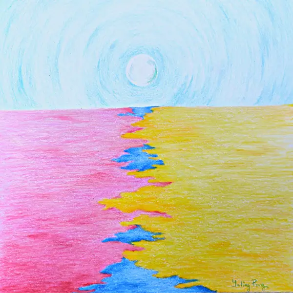

Convergence, Divergence. 2022
Details - Original Work
- Size: A4/ 21cm x 21cm (8.27x8.27")
- Mediums: colored pencils, drawing paper (white)
Story/Comment by the Artist
I drew this as a thank-you gift to my ex-husband before our divorce. The drawing manifests our paths coming together a few times, those intense years as a couple (we went through lots of uncertainty together), and finally going on our separate paths.
Luckily, we both feel the other person made us a better human during our relationship :)
Drawn with lots of love and best wishes for us both.